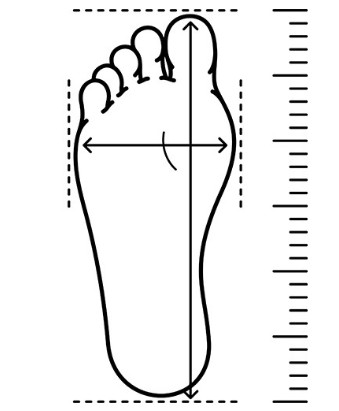
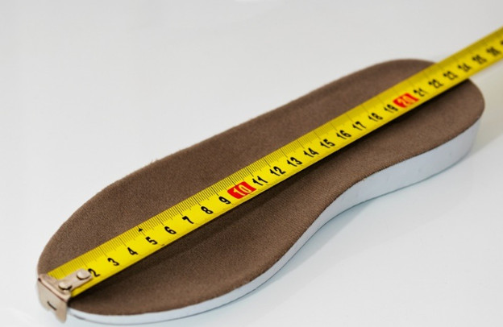
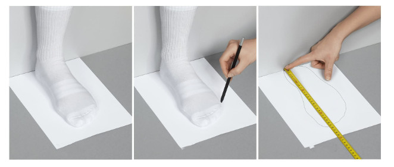

Tư vấn chọn size – Hướng dẫn chọn giày chuẩn nhất cho bạn!
Việc tìm một đôi giày vừa vặn và thoải mái khi mang lên chân chắc chắn không phải là điều dễ dàng gì. Đặc biệt là khi bạn mua hàng online. Thấu hiểu được điều đó, bài viết sau đây sẽ giúp bạn lựa chọn size giày nam phù hợp với mình nhất. Hãy cùng Sneaker khám phá nhé!
Việc đo chiều dài bàn chân hết sức quan trọng. Các nhà sản xuất thường sẽ để bản quy đổi size giày sang cm để giúp bạn đặt mua giày đúng kích cỡ.

Công thức đổi size giày như sau:
Size cm = chiều dài bàn chân + 1.5 (chiều dài tính bằng cm)
Ngoài chiều dài của bàn chân bạn còn phải chú ý đến mẫu giày. Với những loại giày có mũi nhọn nên chọn size lớn hơn bình thường vì bản thân loại giày này đã nhỏ hơn giày bình thường. Nếu mu bàn chân của bạn cao, hãy chọn những đôi giày có khóa kéo ở bên hông, phía trước hoặc ở một phần gót. Nếu bàn chân to về bề ngang, bạn cần tránh xe giày mũi nhọn.
Đối với những người size 37.5 hay 38.5, sẽ rất khó cho họ chọn một size giày phù hợp. Trong trường hợp này vẫn có nhiều thương hiệu cung cấp giày size lẻ.
Vào mùa hè, bàn chân thường lớn hơn các mùa khác. Vì vậy bạn nên đo chân của mình trước khi mua giày trực tuyến. Nếu bạn đang tìm kiếm giày lông thú dành cho mùa đông, hãy chọn loại có kích thước lớn hơn để có được sự thoải mái nhé.

Kích thước của bàn chân một người sẽ thay đổi theo thời gian bởi các yếu tố về tuổi tác, trạng thái cân nặng,... Vậy nên bạn cần đo kích thước bàn chân của mình thường xuyên hơn. Việc này có thể dễ dàng thực hiện tại nhà.
Một lưu ý nhỏ khi bạn đo size giày bạn cần nắm
Bạn nên đo kích thước chân trong trạng thái cân bằng nhất, có thể ở tư thế ngồi thẳng hoặc cân bằng, không xiêu vẹo hay di chuyển quá nhiều trong lúc đo
Đo kích thước ở cả 2 bàn chân vi hai chân không bằng nhau, do đó nên đo cả hai bên để nhận thấy bên nào kích thước lớn hơn thì dùng bên đó làm kết quả đo.
Cách để đo kích thước bàn chân như sau:
Bước 1: Bạn chuẩn bị tờ giấy A4, bút và thước kẻ
Bước 2: Đặt chân lên tờ giấy
Bước 3: Giữ bút theo chiều dọc, chấm hai điểm cuối ở gót chân và điểm đầu ở nơi ngón chân dài nhất
Bước 4: Đo khoảng cách giữa hai chấm bằng thước
Bước 5: Xác định chiều dài của bàn chân bạn, đo bằng đơn vị cm
Bước 6: Thực hiện tương tự với bàn chân còn lại

Như vậy là bạn vừa thực hiện xong quy trình đo bàn chân. Khi đã có số đo bạn quy đổi theo bảng size giày nam. Tuy nhiên, bạn cần lưu ý rằng các thương hiệu giày khác nhau không dùng chung một bảng quy ước. Do đó bạn cần phải tham khảo qua bảng số đo được cung cấp trên trang web của thương hiệu giày mà bạn đang có ý định chọn mua.